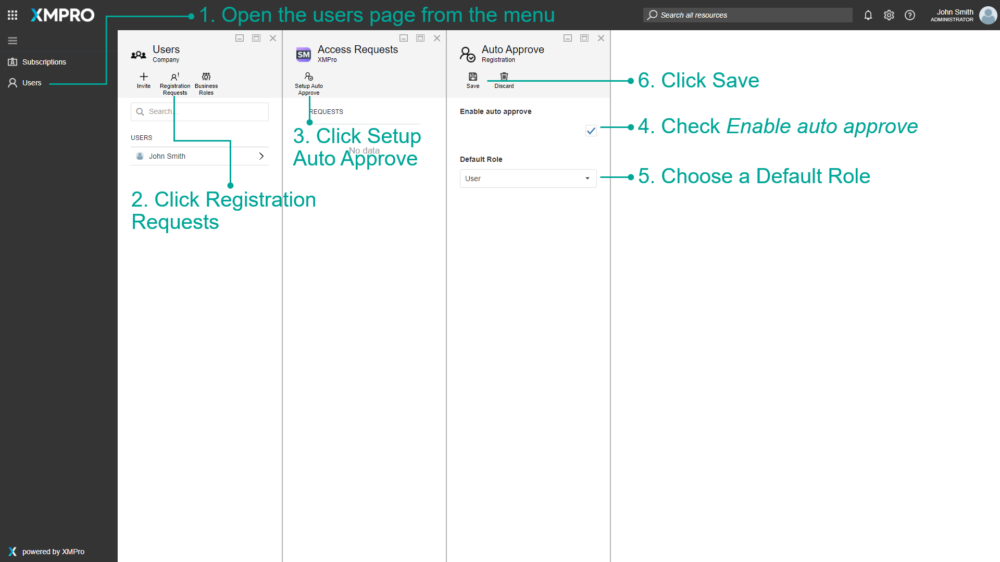
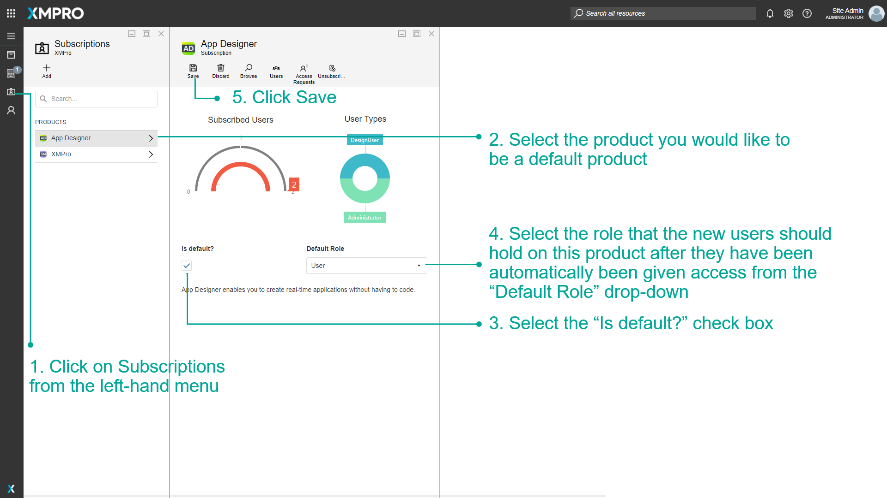

Setup Auto Approval/Default Subscriptions
Warning
Please note that this section is intended for Administrative users. No other type of user is allowed to manage a Company's Subscriptions.
Auto Approval
Company Administrators in the Subscription Manager can set up Auto Approval for any users who sign up using the Company name. If Auto Approval is enabled, the Company Administrator does not need to approve access requests individually, instead, the user will automatically gain access to XMPro.
To enable Auto Approval, first log in to XMPro Subscription Manager as a Company Administrator. Then:
- Click Users in the left menu to open the Users page.
- Open the Access Requests page by clicking the Registration Requests button in the command bar.
- Open the Auto Approve page by clicking the Setup Auto Approve button in the command bar.
- Check the Enable auto approve checkbox.
- Choose a Default Role that will be given to new users.
- Click Save.

Default Subscriptions
Company Administrators in the Subscription Manager have the ability to determine if users signing up to the Subscription Manager are given access to products by default. They can also assign users a default specific role, according to what they have configured.
For example, if a Company Administrator set the Data Stream Designer to be a default product and set the default role for this product to "General User", any new person signing up will be given access to the Data Stream Designer as a general user when the Company Administrator approves their request for access to Subscription Manager. Thus, there is no need to have every user signing up request a subscription to every product they need access to, on top of Subscription Manager, and approve every request individually. To set this up, follow the steps below:
- Click on Subscriptions from the left-hand menu.
- Select the product you would like to be a default product.
- Select the "Is default?" check box.
- Select the role that the new users should hold on this product after they have been automatically been given access from the "Default Role" drop-down.
- Click Save.

Last modified: May 28, 2025